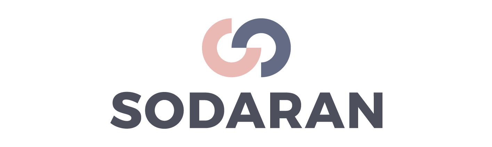

안녕하세요. 모든 입시는 평등하다, 소다란입니다
저희가 주목한 문제상황은 바로 정보소외계층 청소년들이 겪는, 심각한 입시불평등입니다. 대한민국에서 살아가는 우리에게, 대학입시는 어떤 의미일까요? 한국일보와 한국리서치의 설문조사 결과를 보시면 76.2% 가량이 교육정도에 따라 인생이 달라진다고 답했고, 64.4% 가량이 우리 사회에서는 대학을 나오지 않으면 성공이 어렵다고 답했습니다. 예전에는 소위 양반이 되려고 대학을 갔다면 지금은 양반이 되려고가 아니라 사람대접을 받기위한 최소한의 관문이 되었습니다. 대학입시는, 더 나은 삶을 위한, 누구나 오를 수 있는 사다리가 아니라 불평등의 또다른 이름이 되고 있습니다. 이렇듯 경제적, 지역적 차이가 나타나는 이유는 바로 주변에서 입시 정보를 얻을 수 있는 기회와 환경 자체에서 차이가 발생하기 때문입니다.
저희는 대한민국에 만연한 학벌주의 속에서 적어도 학생들이 동등한 출발선 상에 설 수 있도록 하는 미션아래, 공간과 장소에 구애받지 않고 언제 어디서나 접속 가능한 온라인상에서, 보다 합리적이고 저렴한 가격으로 학생들의 입시를 도와주고 정보를 제공하고자 하며 자체 웹사이트와 카카오톡 채널을 바탕으로 정보 소외 청소년들에게 입시컨설팅 서비스와 입시 뉴스레터 서비스 ‘소다란 입시톡’을 운영하는 온라인 입시 플랫폼입니다.
저희는 고등학생과 대학생 컨설턴트를 매칭시켜주는 입시 컨설팅을 중개하며, 웹사이트를 통해 컨설팅 상품을 판매합니다. 저희 컨설팅 서비스는 3월부터 10회 이상의 프로토타이핑을 거쳐 4월 정식 런칭하였으며, 3~4만원대의 합리적인 가격으로 컨설팅을 진행합니다. 한 번의 신청마다 무려 3명의 대학생 컨설턴트를 매칭받아 컨설팅을 진행하기 때문에, 다양한 시각에서 보다 객관적이고 섬세한 맞춤형 컨설팅을 받을 수 있습니다. 또한 지망 학교와 학과의 실제 합격생이 진행하기에 학생은 진로탐색이나 진로설정과정에서도 충분히 도움을 받을 수 있으며 동시에 진심으로 꿈을 성취하고자 하는 동기 부여의 효과를 창출하고, 숫자에 기반한 획일적인 컨설팅이 아닌 실제 경험과 노하우가 포함된 실질적이고 꼼꼼한 컨설팅을 제공합니다.
소다란의 또하나의 서비스는 바로 지난 8월 런칭한 무료 입시 뉴스레터 서비스 ‘소다란 입시톡’ 입니다. 저희 입시톡은 고등학생 뿐만 아니라 학부모님들과 고등학교 선생님들, 공교육 관련 종사자 분들 등 다양한 분들을 타겟으로 운영되고 있으며, 구독만 하면 매주 3회씩 무료로 카카오톡을 통해 전송됩니다. 이러한 저희의 서비스를 통해 청소년들은 우선 입시 준비 과정에 있어서 경제적, 물리적 요인들의 영향을 최소화할 수 있으며, 입시 정보에 접근하고 탐색하는 비용을 현저히 감소시킬 수 있습니다. 또 보다 정성적 성격이 강한 컨설팅을 통해 어디에서도 얻을 수 없었던 대학과 전공에 대한 생생한 정보를 얻고, 이를 통해 진로와 미래 설계 과정 전반에 도움을 받을 수 있으며 준비 기반을 탄탄히 마련할 수 있습니다.
저희 소다란은, 충분한 의지와 동기가 있지만 환경이 따라주지 못하던, 불안감과 조급함 속에서 외로운 싸움을 해야했던 많은 청소년들이 적어도 동등한 출발선 상에 설 수 있도록 돕는 든든한 조력자로써 역할하기 위해 끝까지 노력하겠습니다.